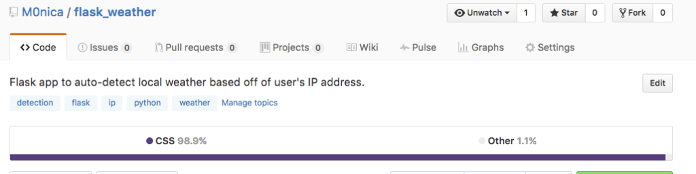

I recently started working on a Weather app in Flask to auto-detect a user’s location based off of their IP address. After committing some updates to GitHub my app switched from being labeled as predominately Python to 98.9% CSS even though it was a Flask application in which most of the code I had written was in Python and HTML. Now and again, I do not agree with how GitHub classifies the languages in my repositories so I set out to figure out how to fix this issue.

Before: My Flask App Appeared in GitHub as 98.9% CSS.
Pro-tip: Help GitHub properly detect your repositories main language(s).
GitHub has a linguist library that auto-detects the language within every repository. Upon researching how to resolve GitHub misclassifying the language of your projects I found out the solution is as simple as telling GitHub which files to ignore. While you still want to commit these files to GitHub and therefore can’t use a .gitignore you can tell GitHub’s linguist which files to ignore in a .gitattribute file. (Side note: Check out my piece on “Hiding API Keys from GitHub” if you are interested in learning about .gitignore).
the solution is as simple as telling GitHub which files to ignore!
Upon examining the documentation for the linguist library I learned that adding just one line to a .gitattribute file would resolve my language issues for this particular repo.
My .gitattribute:
static/* linguist-vendored
This one-line file told GitHub to ignore all of my files in my static/ folder which is where CSS and other assets are stored for a Flask app. Vendor files can sometimes take up a lot of relative space so I am telling the linguist to just ignore them (since they were accounting for 98.9% of my project)!

After: My Flask App Appears in GitHub now as 56.2% Python and 43.8% HTML. Here’s a repository with sample .gitattribute files for you try the next time you disagree with the linguist ;). Note: If the linguist truly is wrong GitHub encourages you to report it as an issue.
I hope this article was helpful! I would love to hear some of your tricks for GitHub and am happy to answer any questions you may have.
Also published on Medium.